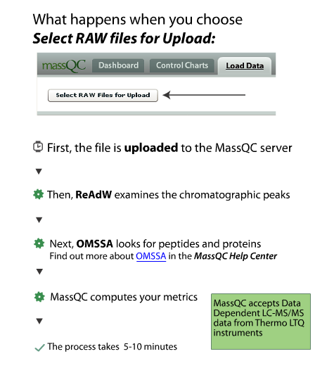

Data Flow in MassQC - Overview

After your data is finished being analysed, you can start your use of MassQC.
| < Previous | Let's Get Started > |
Forum
If you have questions, comments and/or insights about MassQC , you can share them on the MassQC Users Forum .